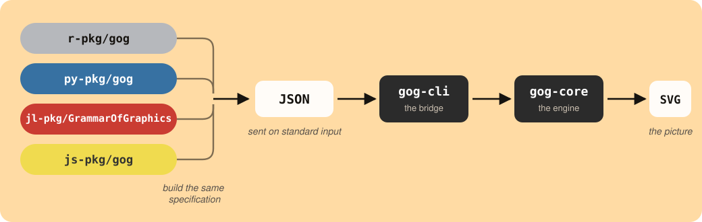

| country | continent | year | life | population | gdp |
|---|---|---|---|---|---|
| Afghanistan | Asia | 2007 | 43.828 | 31889923 | 974.5803 |
| Albania | Europe | 2007 | 76.423 | 3600523 | 5937.0295 |
| Algeria | Africa | 2007 | 72.301 | 33333216 | 6223.3675 |
| Angola | Africa | 2007 | 42.731 | 12420476 | 4797.2313 |
| Argentina | Americas | 2007 | 75.320 | 40301927 | 12779.3796 |
One engine, four languages, one picture
R
Python
Julia
JavaScript
rstats
julialang
One plotting syntax for R, Python, Julia and JavaScript, drawn by one engine, so every one of them returns the identical picture. Every plot in gog’s book is drawn in all four and compared on every change.
You need to draw a plot, and one day you will need the same plot in another language. Which package do you learn?
In R, the answer is usually ggplot2. In Python it is matplotlib, or seaborn built on it.1 Both are good, and they have almost nothing in common. Knowing one teaches you very little about the other. So you learn two vocabularies, and you use them to draw the same scatter twice.
Now suppose you only had to learn one. The same syntax in R, in Python and in Julia, and not one word changes between them. JavaScript is spelled a little differently, and a section below works through it.
gog is a grammar of graphics, and it takes the opposite arrangement. Instead of one plotting library per language, there is one graphics engine with four small packages built on it, one per language. Describe a plot in any of them and you get the same picture: not a similar one, not one that needs its theme adjusted to match, but the identical file.2
The rest of this post is that claim, drawn rather than argued. It starts with an ordinary question.
Do countries that earn more live longer?
That is a question about data: 142 countries, each with a GDP per capita and a life expectancy. Every plot on this page reads that one table, and these are its first five rows:
In gog, you answer a question like that by naming a table, a shape, and which column goes where:
data(gapminder_2007) + point + x(gdp) + y(life) + color(continent)data(gapminder_2007) + point + x(col.gdp) + y(col.life) + color(col.continent)data(gapminder_2007) + point + x(:gdp) + y(:life) + color(:continent)plot(data(gapminder_2007), point, x(col.gdp), y(col.life),
color(col.continent))Read it aloud: “Given gapminder 2007: points, x is gdp, y is life, color by continent.”
The four sentences
Here is the same plot in each language.
# R
data(gapminder_2007) + point + x(gdp) + y(life) + color(continent)# Python
data(gapminder_2007) + point + x(col.gdp) + y(col.life) + color(col.continent)# Julia
data(gapminder_2007) + point + x(:gdp) + y(:life) + color(:continent)The first three are one sentence three times. They differ only in how a column is named: a bare word in R, col.gdp in Python, :gdp in Julia. That is a difference between the three languages, not a difference in the grammar.
JavaScript is the one exception, and the reason is the language itself:
// JavaScript
plot(data(gapminder_2007), point, x(col.gdp), y(col.life), color(col.continent))Compare it with the R above. Every + has become a comma, and the whole sentence now sits inside plot(). This sentence uses only +, so nothing else changed.
It reads that way because a package in JavaScript cannot give + a new meaning. Whatever you put on either side, a + b comes out a number or a piece of text, never a plot. The same is true of the other three symbols, so each of them becomes a word.
That scatter used + alone. Here are the other three, one at a time, each with the picture it draws and the JavaScript for it.
* puts a statistic on a shape. bar * bin is a bar derived by binning, which counts how many countries fall in each range of life expectancy:
data(gapminder_2007) + bar * bin + x(life)data(gapminder_2007) + bar * bin + x(col.life)data(gapminder_2007) + bar * bin + x(:life)plot(data(gapminder_2007), layer(bar, bin), x(col.life))“Given gapminder 2007: bars derived by bin, x is life.”
JavaScript writes that pair as layer():
plot(data(gapminder_2007), layer(bar, bin), x(col.life))| with facet() after it cuts one plot into a panel per group. This is the scatter from the top of the page split into five panels, and they all share one pair of axes, so the continents can be compared:
data(gapminder_2007) + point + x(gdp) + y(life) | facet(continent)data(gapminder_2007) + point + x(col.gdp) + y(col.life) | facet(col.continent)data(gapminder_2007) + point + x(:gdp) + y(:life) | facet(:continent)plot(data(gapminder_2007), point, x(col.gdp), y(col.life),
across(col.continent))“Given gapminder 2007: points, x is gdp, y is life, split into panel columns by continent.”
JavaScript calls that across(). There is no separate facet() beside it, because the symbol and the word were always one phrase:
plot(data(gapminder_2007), point, x(col.gdp), y(col.life), across(col.continent))| with a second plot after it does something else entirely. It sets the two plots on one page, and these are the two you have already seen:
(data(gapminder_2007) + point + x(gdp) + y(life)) |
(data(gapminder_2007) + bar * bin + x(life))((data(gapminder_2007) + point + x(col.gdp) + y(col.life)) |
(data(gapminder_2007) + bar * bin + x(col.life)))(data(gapminder_2007) + point + x(:gdp) + y(:life)) |
(data(gapminder_2007) + bar * bin + x(:life))beside(plot(data(gapminder_2007), point, x(col.gdp), y(col.life)),
plot(data(gapminder_2007), layer(bar, bin), x(col.life)))“Points, x is gdp, y is life, beside bars derived by bin, x is life.”
Same symbol as the panels above, and a different picture. R decides between the two by reading what comes after the |. A word cannot do that, so this one gets a word of its own:
beside(plot(data(gapminder_2007), point, x(col.gdp), y(col.life)),
plot(data(gapminder_2007), layer(bar, bin), x(col.life)))Count the plot() calls in the last two blocks. One call with across() inside it is a single plot drawn several times over. Two calls inside beside() are two plots that share nothing but the page.
/ is the fourth symbol, and it does the same two jobs downward: panels stacked rather than side by side, and one plot above another rather than beside it. So the whole of what JavaScript spells out is six words:
| In JavaScript | What it does | In the other three |
|---|---|---|
the comma inside plot(...) |
adds one more part to the plot | + |
layer(...) |
puts a statistic on a shape | * |
across(...) |
one panel per group, side by side | | |
down(...) |
one panel per group, stacked | / |
beside(...) |
two separate plots, side by side | | |
below(...) |
two separate plots, one above the other | / |
Six words where the other three languages have four symbols, and the two | rows are the reason. That is the whole cost of the missing operators, and it is a cost in vocabulary rather than in what you can draw.
What you write, and what travels
Four spellings, one picture. That works because of what the four packages actually do, which is less than you would expect.
When you make a plot here, you are not drawing it. You are describing it. You name a table, a shape to draw, and which column goes to which part of the picture. Your language turns that into a short block of text and hands it over. Something else reads the text and draws the picture.
That block of text has a name. It is the plot’s specification, and building one is the whole job of each of the four packages.

Read the diagram from left to right. The four boxes on the left are the four packages you can install. Each lets you write in its own language, and all four produce the same specification. It travels to the engine, and that is where all of the real work happens: choosing the axes, the tick marks, the colors, the spacing, and the position of every dot on the page.
So the four packages cannot disagree about what a plot looks like. None of them chooses the axes, the colors, or where a single dot goes. Those decisions are made once, in one place, by code that all four share. That is a stronger promise than four libraries carefully kept the same, because there is nothing left inside them that could drift.
What you get
Three things follow from that.
- The figures match. The plot in the paper and the plot on the dashboard are the same picture, so nobody spends an afternoon matching palettes before a deadline.
- A plot is a file. The picture the engine returns is an SVG, which holds shapes rather than pixels. Enlarge it for a poster and the lines stay sharp, and open it in a text editor to read what it says.
- Your colleague can redraw it. Send them the sentence instead of the picture, and they get your plot over their data, in Python if Python is what they write. Nothing has to be ported, because there was never any drawing code to port.
How all four are kept the same
Not by hoping. gog’s book has 58 chapters, and every plot in it is drawn by the engine as the page builds rather than saved as a picture. So the book is also a working list of the plots the grammar can make.
Every time the code changes, that list is pulled out of the book and drawn again from Python, from JavaScript and from Julia. Each result is compared against the one R produced, character by character rather than by eye. Nothing is sampled and nothing is skipped.
That is 819 specifications on every change, each drawn three more times. Not all of them are plots: 191 ask for something the grammar refuses, and the check compares the refusal messages word for word. If one of the four stops matching, the check names the exact plot that came out different.
Every plot arrives with controls
Look under any of the flat plots on this page. There is a row of five small boxes. Two are magnifiers, and they look closer and wider. The frame gives you back the whole picture. The hand means you can drag the plot to move it. The camera saves what you are looking at as a PNG file. A box is dimmed when there is nothing for it to do.
You did not ask for any of that, and there is no word in the grammar that turns it on. In most libraries, a finished plot is a still image, so zooming into it or saving a larger copy means installing a second package. Here it is already there, on every plot, and you never wrote a line for it.
Add a third position and the plot becomes a cube you can turn. Drag this one:
data(gapminder_2007) + point + x(gdp) + y(life) + z(population) + color(continent)data(gapminder_2007) + point + x(col.gdp) + y(col.life) + z(col.population) + color(col.continent)data(gapminder_2007) + point + x(:gdp) + y(:life) + z(:population) +
color(:continent)plot(data(gapminder_2007), point, x(col.gdp), y(col.life),
z(col.population), color(col.continent))A cloud of points in three dimensions always hides some points behind others. Turning it shows you what one angle was hiding. It is the same sentence as the scatter at the top of this page with one more position in it.
What this is not
It is version 0.1.0, and that number is accurate. The project is young, there are things mature libraries draw that it cannot, and the book keeps a dated list of exactly what those are.
What you can do
Read the book
It is live: every plot in it is drawn by the engine as the page builds, and not one is a screenshot. The JavaScript chapter covers the missing operators above in full.
Install it
R, Python and JavaScript carry the engine inside the package, built for your platform, so there is nothing else to set up.
# R
install.packages("gog", repos = c("https://psychometrician.r-universe.dev",
"https://cloud.r-project.org"))# Python
pip install gog# Julia
using Pkg; Pkg.add("GrammarOfGraphics")# JavaScript
npm install grammar-of-graphicsJulia is the one that does not carry the engine yet. One command builds and installs it, and Julia finds it on your path:
cargo install --git https://github.com/psychometrician/gog gog-cliThat command needs Rust, which rustup installs in one step. If you started Julia from an editor or a notebook, that session may not see your path, so set ENV["GOG_CLI_PATH"] to the binary instead. Julia is the only one of the four that asks for any of this, and it will not ask for long.
Draw the plots on this page
Every plot above reads one table, and gog_table() fetches it by name. It comes with the package, so there is no file to download and no reader to write. Here is the scatter from the top of the page, in each language:
gapminder_2007 <- gog_table("gapminder_2007")
data(gapminder_2007) + point + x(gdp) + y(life) + color(continent)gapminder_2007 = gog_table("gapminder_2007")
data(gapminder_2007) + point + x(col.gdp) + y(col.life) + color(col.continent)gapminder_2007 = gog_table("gapminder_2007")
data(gapminder_2007) + point + x(:gdp) + y(:life) + color(:continent)const gapminder_2007 = await gog_table("gapminder_2007");
plot(data(gapminder_2007), point, x(col.gdp), y(col.life), color(col.continent));The other plots on this page are that sentence with a word or two changed. The book’s data chapter lists the 39 tables gog_table() can fetch.
Try to make two of them disagree
Write the same plot in two of the four languages and look at the two pictures. Comparing them by eye is enough. If they are not the same, the promise at the top of this page does not hold, so let us know.
Check a plot against a tool you trust
Draw data you know well here, and draw the same thing in a tool you already trust. Put the two pictures side by side and tell us where they differ.
The source is on GitHub, Apache 2.0.
Be agog. Use gog.
Footnotes
There is a third answer, and it is the closest thing to what this post is about. plotnine brings ggplot2’s grammar to Python, so someone who writes both languages really can carry most of one vocabulary into the other. Two things stop it being one sentence written twice. Column names are quoted there and bare in R, so
aes(x = gdp)becomesaes(x = "gdp"). And the two draw through different renderers, ggplot2 through grid and plotnine through matplotlib, so the pictures come out alike rather than identical, and a pair of them still needs matching by hand before they share a page. Between them, ggplot2 and plotnine reach two of the four languages here.↩︎Plotly is the closest thing that already exists, and it reaches these same four languages. Underneath them is one renderer, plotly.js, fed a figure written as JSON. What is not shared is the sentence you write. The same request is
plot_ly(df, x = ~gdp, y = ~life)in R, with the formula notation that language needs;px.scatter(df, x="gdp", y="life")in Python;plot(scatter(x=df.gdp, y=df.life))in Julia; andPlotly.newPlot(div, [{x: gdp, y: life, type: "scatter"}])in JavaScript. Each wrapper carries its own defaults as well, so one request written twice does not arrive as the same JSON. Plotly does not claim that two languages give you the identical file, and that claim is this post’s whole subject. Where it is strong is interaction, and it is a good tool.↩︎